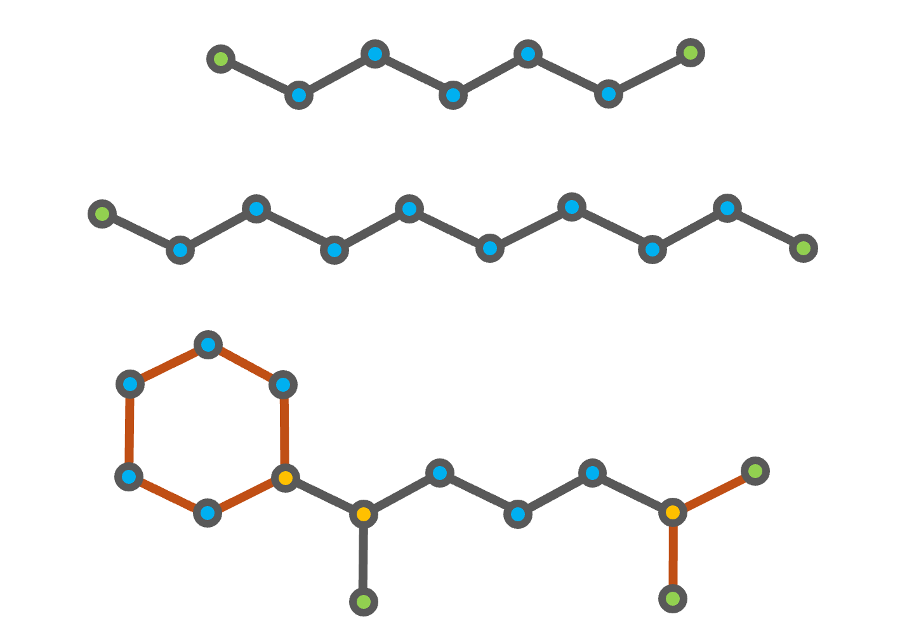

Introduction and Basic Usage
FuelLib is a Python library that uses group contribution methods to estimate the thermophysical properties of multicomponent liquid fuels and their mixtures. This tutorial provides a basic introduction to using FuelLib, including installation, required input files, and example usage.
Download and Setup
Install FuelLib using pip:
pip install fuellib
The required dependencies will be installed automatically.
For information about contributing or installation for development, see the Contributing page.
If you want to run the example scripts, you can either clone the repository or download individual tutorial files from the tutorials directory on GitHub.
Required Input Files
FuelLib comes with a variety of built-in fuels with pre-populated input files, but you can also add your own custom fuels by providing the required input files. Each fuel requires one input file:
fuellib/data/gcData/<fuel_name>.csv: the GCxGC composition of the fuel (must include aWeight %column and either aReference Compoundor aSMILEScolumn; optional columns includeGC-BinandPelePhysics Key)
Each row of the GCxGC file is matched to a compound in the reference data tables, which store the compound’s SMILES, hydrocarbon family, and group decomposition:
fuellib/data/refCompounds.csv: reference compounds with their family, carbon number, SMILES, and (optionally) measured properties.fuellib/data/refGani.csv: the fundamental group decomposition of each reference compound (must have columns for the groups defined in gani.csv).fuellib/data/refNannoolal.csv: the Nannoolal group decomposition of each reference compound, used for the Nannoolal viscosity correlations (columns must be groups defined in nannoolal.csv).
Rows are matched by Reference Compound name first (case-insensitive) and then by the InChI derived from SMILES. A ValueError listing the unmatched rows is raised if any GCxGC compound is missing from the reference tables, so new compounds must first be added to the reference tables (see the Adding Custom Fuels tutorial). Many examples can be found in the fuellib/data directory in the repository.
Optionally, measured property data can be provided in propertiesData/<fuel_name>.csv. It is loaded into Fuel.propData and used for validation and plotting.
Decomposing Fuel Components into Fundamental Groups
The decomposition process requires knowledge of the chemical structure of each component in the fuel.
A starting decomposition can be generated automatically from SMILES strings with fuellib.gcm.gani.decompose() or the fl-decomp-smiles command (see Command-Line Interface (CLI) Tools), but the results should be checked against the Gani table.
Nannoolal decompositions for refNannoolal.csv can be generated in the same way with fuellib.gcm.nannoolal.decompose() or fl-decomp-smiles --method nannoolal.
Warning
Automated decompositions must be verified. A known shortcoming is indene, where the non-aromatic C=C bond is categorized as a CH group.
For example, consider a multicomponent fuel consisting of heptane (C7H16), decane (C10H22), and (1,5-dimethylhexyl)cyclohexane (C14H28).


Fig. 4 Chemical structures of heptane (top), decane (middle), and (1,5-dimethylhexyl)cyclohexane (bottom). The CH3 groups are highlighted in green, the CH2 groups in blue, and the CH group in gold. The additional second order structures of (1,5-dimethylhexyl)cyclohexane are shown in orange.
The decomposition of heptane and decane into the groups defined in the Gani table is straightforward, as both compounds consist of only CH3 and CH2 groups. (1,5-dimethylhexyl)cyclohexane is a branched cycloalkane with a six-membered ring and two methyl branches on the first and fifth carbon atoms of the ring, as shown in the figure above. The six-membered ring and the branch containing the two CH3 groups bonded to a CH group are accounted for using the second order groups defined in the Gani table. However, the remaining branch with a single CH3 group bonded to a CH2 group is not defined in the Gani table.
Compound |
CH3 |
CH2 |
CH |
… |
(CH3)2CH |
6 membered ring |
|---|---|---|---|---|---|---|
Heptane |
2 |
5 |
0 |
… |
0 |
0 |
Decane |
2 |
8 |
0 |
… |
0 |
0 |
(1,5-dimethylhexyl)cyclohexane |
3 |
8 |
3 |
… |
1 |
1 |
Note
The group decompositions in refGani.csv must follow the groups defined in the Gani table, there are \(N_{g1} = 78\)
first-order groups and \(N_{g2} = 43\) second order groups. The second-order groups start with the
branching structure (CH3)2CH. Not all branching structures are defined in the Gani table. We recommend
starting with fuellib/data/refGani.csv and adapting the decompositions and compounds for your fuel.
Basic Usage
To demonstrate the usage of FuelLib, we will use the fuel “heptane-decane”, which is a
binary mixture of heptane and decane. The initial weight percentage composition is 73.75%
heptane and 26.25% decane, and the group decompositions of both compounds are provided in
refGani.csv.
The following tutorial is included in the FuelLib/tutorials
as basic.py. To begin, we will import the necessary modules and create a fuel object for the two component fuel “heptane-decane”:
import fuellib as fl
# Create a fuel object for the fuel "heptane-decane"
fuel = fl.Fuel("heptane-decane")
Upon initialization, the fuel object will read the GCxGC composition and match each compound to the
reference compound and group decomposition tables. Fundamental properties at standard conditions for each component
of the fuel (e.g., fuel.Tc, fuel.Pc, fuel.Tb) are evaluated lazily on first access and returned as
vectors (pint quantities for unit checking), as described in Equations for GCM properties. When measured values for a
compound are available in refCompounds.csv they are used in place of the group-contribution prediction
(see Reference Property Data); pass useRefProperties=False to Fuel to use only predictions.
For example, we can display the fuel name, the components in the fuel, the initial composition, and the critical temperature for each component:
# Display fuel name, components, initial composition, and critical temperature
print(f"Fuel name: {fuel.name}")
print(f"Fuel components: {fuel.compounds}")
print(f"Initial composition: {fuel.Y_0}")
print(f"Critical temperature: {fuel.Tc}")
>> Fuel name: heptane-decane
>> Fuel components: ['n-heptane', 'n-decane']
>> Initial composition: [0.7375 0.2625]
>> Critical temperature: [549.8559805147336 623.6905158181833] kelvin
Note that the units for critical temperature are included as fuel.Tc returns a pint.Quantity[np.ndarray]. Next, we can calculate any of the component- or mixture-level properties using the
fuel object. For example, we can calculate the saturated vapor pressure
for each component and the mixture at a given temperature:
# Calculate the saturated vapor pressure at 320 K
T = fl.Units.Quantity(320, "K") # Temperature as a pint.Quantity
p_sat_i = fuel.psat(T)
p_sat_mix = fuel.mixture_vapor_pressure(fuel.Y_0, T)
print(f"Saturated vapor pressure at {T} K: {p_sat_i}")
print(f"Mixture saturated vapor pressure at {T} K: {p_sat_mix}")
>> Saturated vapor pressure at 320 K: [13735.84605413 673.28876023] pascal
>> Mixture saturated vapor pressure at 320 K: 11117.84926875165 pascal
The following links provide more information on the Equations for individual compound correlations and
the Equations for mixture properties from GCM that can be calculated using the groupContribution object.